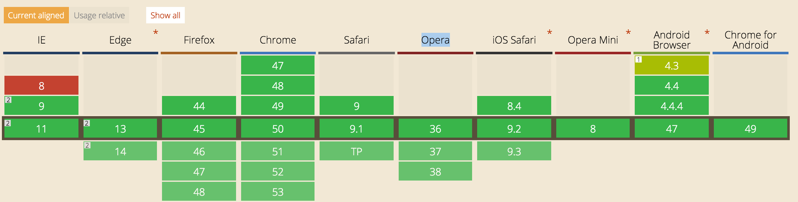

easing.easingFun(t, b, c, d);
// t: current time,
// b: begInnIng value,
// c: change In value,
// d: duration
如果需要大量重绘相似的物体， 可以通过预渲染场景中的大部分物体来提升性能。
// 离线cvs
var offLineCvs = document.createElement('canvas'),
offLineCtx = offLineCvs.getContext('2d');
offLineCvs.width = 30;
offLineCvs.height = 30;
offLineCtx.drawSomething
// 绘制 离线cvs
ctx.drawImage(
offLineCvs,0,0,offLineCvs.width,offLineCvs.height,
pX, pY, pWidth, pHeight
);
将所有的点放到路径中会比分别单独的绘制各个部分要高效的多
// bad
for (var i = 0; i < points.length - 1; i++) {
var p1 = points[i];
var p2 = points[i+1];
context.beginPath();
context.moveTo(p1.x, p1.y);
context.lineTo(p2.x, p2.y);
context.stroke();
}
// good
context.beginPath();
for (var i = 0; i < points.length - 1; i++) {
var p1 = points[i];
var p2 = points[i+1];
context.moveTo(p1.x, p1.y);
context.lineTo(p2.x, p2.y);
}
context.stroke();
// bad
ctx.fillRect(8.233333,8.233333,49.233333,50.233333);
// good
ctx.fillRect(
Math.round(8.233333),
Math.round(8.233333),
Math.round(49.233333),
Math.round(50.233333)
);
官网页面使用的 canvas 动画，不同于 canvas 应用，需要一直展示。只要在该屏出现的时候，运行即可。而在该屏离开屏幕的时候，应该要停止操作这一屏的 canvas，这样可以避免不必要的性能开销。
https://codepen.io/JasonTurbo/pen/PNReQQSVG可缩放矢量图形（Scalable Vector Graphics）是基于可扩展标记语言（XML），用于描述二维矢量图形的一种图形格式。SVG是W3C制定的一种新的二维矢量图形格式，也是规范中的网络矢量图形标准。SVG严格遵从XML语法，并用文本格式的描述性语言来描述图像内容，因此是一种和图像分辨率无关的矢量图形格式。
css动画比较简单，主要形式是先让动画元素变换到指定位置。当该元素被浏览（激活），则将变换重写为none。这里可以通过给被激活元素（或父级元素加上特定的类）实现。
.ani-elem {
left: 109px;
// for animate
opacity: 0;
transform: sometransform;
transition: transform 1s 1s, opacity 1s 1s;
}
.actived .ani-elem {
opacity: 1;
transform: none;
}
官网产品页面，几乎所有动画都是滚动触发的。 为了方便，所以写了个小插件帮忙处理滚动监听。 然后页面就可以不用关心滚动逻辑而专注于 css 动画了。 https://github.com/mz-components/mz-scroll
一个栗子
/*
* options 配置 如果传false则删除此元素监听任务
*
* once {boolean} 是否执行一次 default false
* topOffset {int} 元素顶部到窗口底部的距离多少算进入区域 default 0
* bottomOffset {int} 元素底部到窗口顶部部的距离多少算进入区域 default 0
* setUp {function} 如需要做一些准备工作可以写在这里
* activeClass {string} 元素进入区域要添加的类
* scrollIn {function} 元素进入区域的回调
* scrollOut {function} 元素离开区域的回调
* scrolling {function(scrolloffset)} 元素处于激活状态时处理滚动的函数
*/
$('.slider').addScroll({
once: true,
topOffset: -500,
bottomOffset: -400,
activeClass: 'actived'
});
css
.no-borderradius {
// 如果不支持 borderradius 怎样怎样
}
.no-canvas {
// 如果不支持 canvas 怎样怎样
}
js
if (Modernizr.csstransitions) {
// 如果支持 transitions 怎样怎样
}
if (Modernizr.video) {
// 如果支持 video 怎样怎样
}